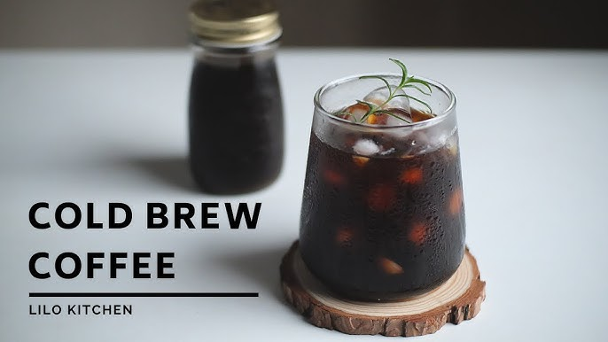

TRANG CHỦ / BLOG :
 Các bài viết
Các bài viết

BÀI VIẾT NỔI BẬT

CAFE SÁNG RẤT TỐT CHO SỨC KHOẺ
CAPHEVIET tự hào mang đến cho khách hàng những loại cà phê chất lượng nhất ở vùng đất Gia Lai này

TẠI SAO CAFE LẠI ĐƯỢC NHIỀU NGƯỜI ƯA CHUỘNG ?
Cà phê trở thành thói quen của người tiêu dùng Việt, bất kể là nam hay nữ. Họ có thể sử dụng chúng vào...
CHÚT CÀ PHÊ
Gia Lai nổi tiếng với loại cà phê là Robusta. Đây được xem là “vàng nâu” ở nơi này....